Reminder
Last week, we talk about
What is data?
Exploratory Data Analysis
Research Questions
Plot in R (Base)
Lattice Package
Before starting, please install
ggplot2,gridExtra,ggforce,statsExpressions,ggalt,bbplot,leaflet,ggcorplot,izmir
and mlbench package.
install.packages(c("ggplot2","gridExtra","ggforce","statsExpressions","ggalt","bbplot","leaflet","ggcorplot","izmir","mlbench"))ggplot2
Package
ggplot2, developed by H.Wickham, is a plotting system for R, based on the grammar of graphics, which tries to take the good parts of base and lattice graphics and none of the bad parts. It takes care of many of the fiddly details that make plotting a hassle (like drawing legends) as well as providing a powerful model of graphics that makes it easy to produce complex multi-layered graphics.
To get more information about this special packages, you can visit http://ggplot2.org/
Also, there are many videos, books and pages related to this packages. One of them is my book. :)
An Introduction to ggplot2, Ozancan Ozdemir, 2022

The ggplot2, shortly ggplot, implies “Grammar of Graphics” which believes in the principle that a plot can be split into the following basic parts -
Plot = data + Aesthetics + Geometry
data refers to information you want to visualize.
Aesthetics includes the specific variables that you use in drawing. i.e, x and y variables. It is also used to tell R how data are displayed in a plot, e.g. color, size and shape of points etc.
Geometry refers to the type of graphics (bar chart, histogram, box plot, line plot, density plot, dot plot etc.) To see the list of geometric functions, please visit https://ggplot2.tidyverse.org/reference/
Here, you can see some functions from the list.
geom_point() = Scatter Plot
geom_bar() = Bar Plot
geom_line() = Line Plot
geom_histogram() = Histogram
geom_boxplot() = Box Plot
geom_density() = Density Plote.g
library(ggplot2)
ggplot(data,aes(x=x,y=y))+geom_point()In addition to those functions, we use the following arguments or functions for our plots.
Functions
geom_text() = Add label or number on your plot
coord_flip() = Rotate your plot
theme() = Arrange the theme of your plot, e.g size of axis names etc.
facet_wrap() & facet_grid() = Plot for different subject of your data
scale_color_manual() = Change the color of your plot manually.
labs() = Set title, axis name etc. Arguments
col = Change color of your plot by third variable (in aesthetics part)
group= Divide your data into third group (in aesthetics part)
color = Change frame of your box / bar or bin (in geom part)
fill = Fill your box / bar or bin (in geom part)Important Note
ggplot2 package works with data.frame
and tibble objects.
Why ggplot2 is better?
Excellent themes can be created with a single command.
Its colors are nicer and more pretty than the usual graphics.
Easy to visualize data with multiple variables.
Provides a platform to create simple graphs providing plethora of information.
(Ozdemir, O, Lab Notes, 2019)
Application
In this class, diamond data set, used last week, will be used again.
Read the data set at first.
library(ggplot2)
head(diamonds)str(diamonds)## tibble [53,940 x 10] (S3: tbl_df/tbl/data.frame)
## $ carat : num [1:53940] 0.23 0.21 0.23 0.29 0.31 0.24 0.24 0.26 0.22 0.23 ...
## $ cut : Ord.factor w/ 5 levels "Fair"<"Good"<..: 5 4 2 4 2 3 3 3 1 3 ...
## $ color : Ord.factor w/ 7 levels "D"<"E"<"F"<"G"<..: 2 2 2 6 7 7 6 5 2 5 ...
## $ clarity: Ord.factor w/ 8 levels "I1"<"SI2"<"SI1"<..: 2 3 5 4 2 6 7 3 4 5 ...
## $ depth : num [1:53940] 61.5 59.8 56.9 62.4 63.3 62.8 62.3 61.9 65.1 59.4 ...
## $ table : num [1:53940] 55 61 65 58 58 57 57 55 61 61 ...
## $ price : int [1:53940] 326 326 327 334 335 336 336 337 337 338 ...
## $ x : num [1:53940] 3.95 3.89 4.05 4.2 4.34 3.94 3.95 4.07 3.87 4 ...
## $ y : num [1:53940] 3.98 3.84 4.07 4.23 4.35 3.96 3.98 4.11 3.78 4.05 ...
## $ z : num [1:53940] 2.43 2.31 2.31 2.63 2.75 2.48 2.47 2.53 2.49 2.39 ...Association between the numerical variables
index<- unlist(lapply(diamonds, is.numeric)) library(ggcorrplot)
ggcorrplot(cor(pairs))## Warning: package 'ggcorrplot' was built under R version 4.1.3
ggcorrplot(diamonds[,index], method = "circle")
What is the frequency distribution of CUT?
t = table(diamonds$cut)
class(t)
t## [1] "table"##
## Fair Good Very Good Premium Ideal
## 1610 4906 12082 13791 21551df = data.frame(t)
dflibrary(ggplot2)
ggplot(df,aes(x=Var1,y=Freq))+geom_bar(stat="identity")
#stat="identity" must argument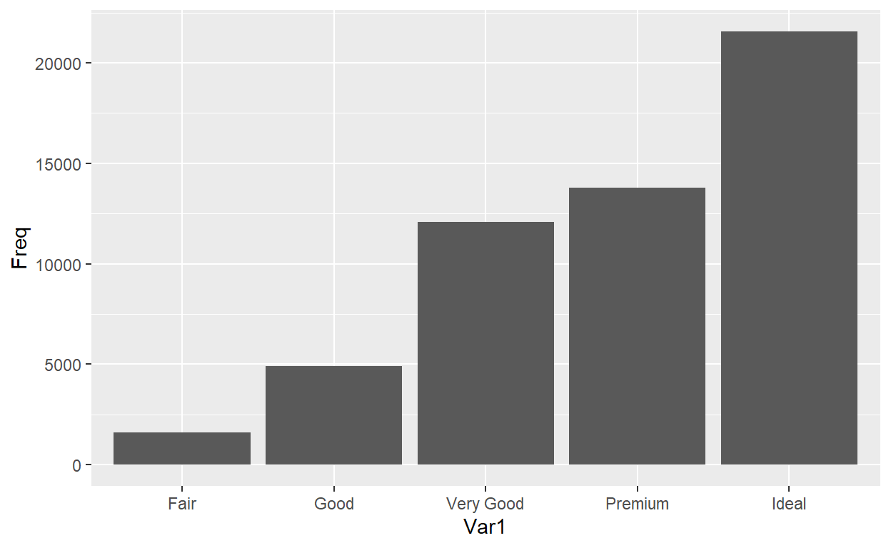
ggplot(df,aes(x=Var1,y=Freq,fill=Var1))+geom_bar(stat="identity")+
labs(title="Bar Plot of CUT",y="Freq",x="Level")
ggplot(df,aes(x=Var1,y=Freq,fill=Var1))+geom_bar(stat="identity")+
labs(title="Bar Plot of CUT",y="Freq",x="Level")+geom_text(aes(label=Freq),fontface="bold")
#label a must argument
ggplot(df,aes(x=Var1,y=Freq,fill=Var1))+geom_bar(stat="identity")+
labs(title="Bar Plot of CUT",y="Freq",x="Level")+geom_text(aes(label=Freq),vjust=-0.25,fontface="bold")
#label a must argument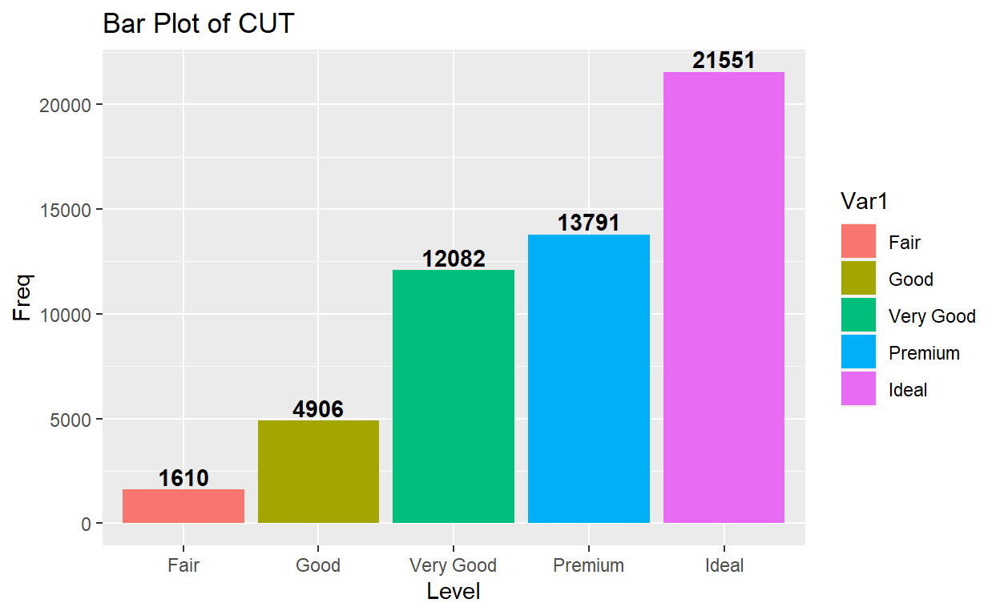
Ordering x axis
Use reorder() argument.
ggplot(df,aes(x=reorder(Var1,-Freq),y=Freq,fill=Var1))+geom_bar(stat="identity")+
labs(title="Bar Plot of CUT",y="Freq",x="Level")+geom_text(aes(label=Freq),vjust=-0.25,fontface="bold")
Instead, you can use stat = "count" argument
basically.
ggplot(diamonds,aes(x=cut, fill = cut))+geom_bar()+
labs(title="Bar Plot of CUT",y="Freq",x="Level")+geom_text(stat="count",aes(label =..count..),vjust=-0.25,fontface="bold")
## Warning: The dot-dot notation (`..count..`) was deprecated in ggplot2 3.4.0.
## i Please use `after_stat(count)` instead.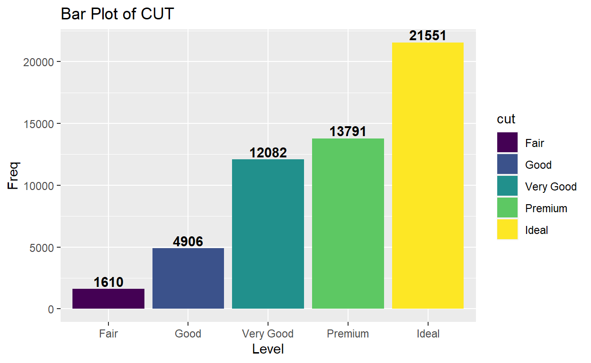
What is the distribution of carat?
class(diamonds$carat)## [1] "numeric"ggplot(diamonds,aes(x=carat))+geom_histogram()## `stat_bin()` using `bins = 30`. Pick better value with `binwidth`.
ggplot(diamonds,aes(x=carat))+geom_histogram(fill="darkred")+labs(title="Histogram of Carat",y="Count",x="Carat")## `stat_bin()` using `bins = 30`. Pick better value with `binwidth`.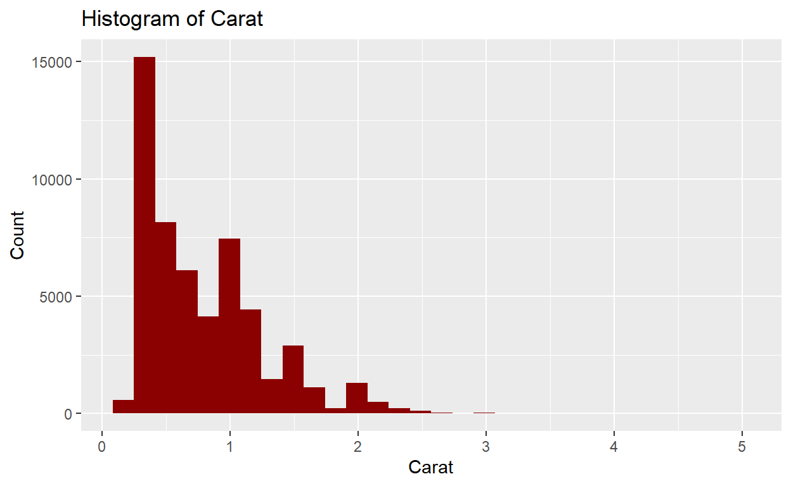
ggplot(diamonds,aes(x=carat))+geom_density()+labs(title="Density Plot of Carat",y="Prob",x="Carat")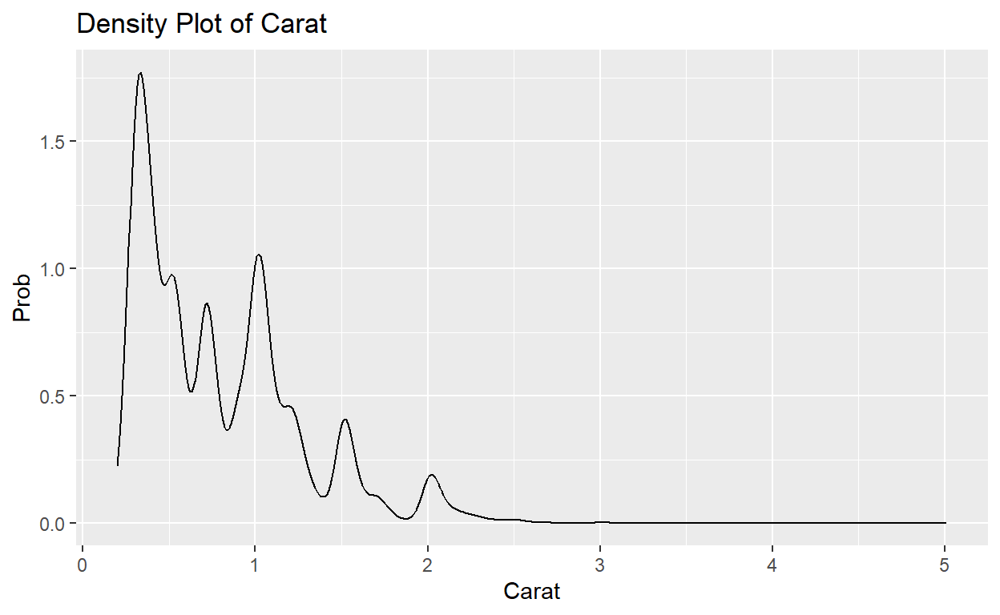
It is observed that carat has right skewed multimodal distribution.
ggplot(diamonds,aes(x=carat))+geom_histogram(fill="darkred",aes(y=stat(density)))+labs(title="Histogram and Density Plot of Carat",y="Count",x="Carat")+geom_density(col="orange")
#aes(y=stat(density))is must ## Warning: `stat(density)` was deprecated in ggplot2 3.4.0.
## i Please use `after_stat(density)` instead.## `stat_bin()` using `bins = 30`. Pick better value with `binwidth`.
g1<-ggplot(diamonds,aes(x=carat))+geom_boxplot()+labs(title="g1")
g2<-ggplot(diamonds,aes(x=factor(1),y=carat))+geom_boxplot()+labs(title="g2") #factor(1) a must
library(gridExtra)
grid.arrange(g1,g2,ncol=2)## Warning: package 'gridExtra' was built under R version 4.1.2
ggplot(diamonds,aes(x=factor(1),y=carat))+geom_boxplot(fill="darkred")+labs(title="Box Plot of Carat")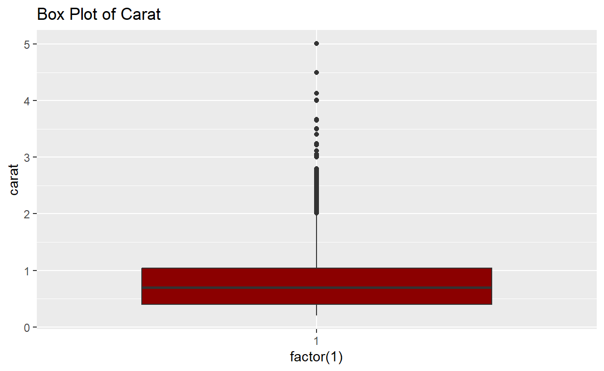
What is the association between carat and price?
ggplot(diamonds,aes(x=carat,y=price))+geom_point()+labs(title = "The relationship between Carat and Price")
ggplot(diamonds,aes(x=carat,y=price))+geom_point(col="darkred")+labs(title = "The relationship between Carat and Price")
Adding trend line
ggplot(diamonds,aes(x=carat,y=price))+geom_point(col="darkred")+labs(title = "The relationship between Carat and Price")+geom_smooth()## `geom_smooth()` using method = 'gam' and formula = 'y ~ s(x, bs = "cs")'
Price and carat have strong positive relationship but some outliers exist that violates the relationship.
More and More
What is the association between carat and price by cut type?
Facet in ggplot
Generating a plot for each level of a factor.
ggplot(diamonds,aes(x=carat,y=price))+geom_point()+facet_wrap(.~cut)
# .~ is must 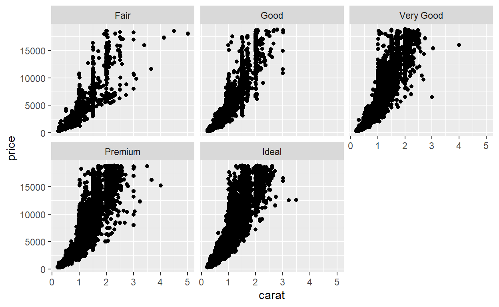
What is the association between carat and price by depth and cut?
Bubble Plot : A bubble plot is a scatter plot with a third numeric variable mapped to circle size. It also enable us to include one categorical variable as a fourth one.
In order to explain the concept, I would like to use a sample of data.
set.seed(123)
s = diamonds[sample(1:53940,50),]
ggplot(s,aes(x=carat,y=price,size=depth,col=cut))+geom_point()+labs(title="Association between Carat and Price by Cut and Depth")
The plot shows that when depth and cut quality increases, we can expect high carat and price.
How does depth distribute by clarity?
ggplot(diamonds,aes(x=clarity,y=depth))+geom_point()+labs(title="Relationship between Clarity and Depth")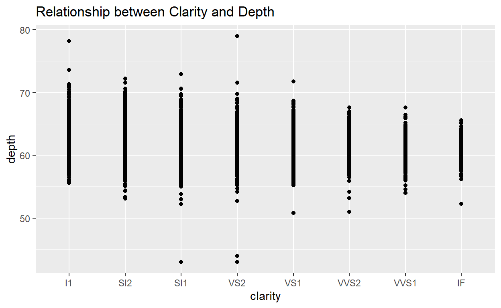
Such plot suffers from overplotting which makes interpretation harder. It is a common problem seen in data set having large number of observations (for this data we have 53940 observations.)
There are some suggested solutions for this problem. To see the list click here, and one of them is jittering.
Jitter Plot: Random noise are added to the location of each point to remove overplotting.
ggplot(diamonds,aes(x=clarity,y=depth))+geom_point(position="jitter")+labs(title="Relationship between Clarity and Depth")
#position="jitter" is must
To see the effect of jittering, let us use the sample data set, using sample of data is one of the solution of overplotting.
ggplot(s,aes(x=clarity,y=depth))+geom_point()+labs(title="Relationship between Clarity and Depth for Sample Data Set")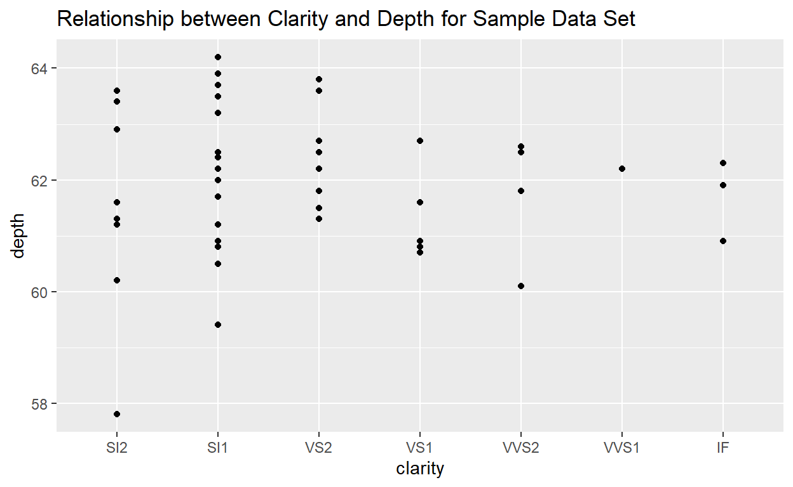
ggplot(s,aes(x=clarity,y=depth))+geom_point(position="jitter")+labs(title="Relationship between Clarity and Depth for Sample Data Set")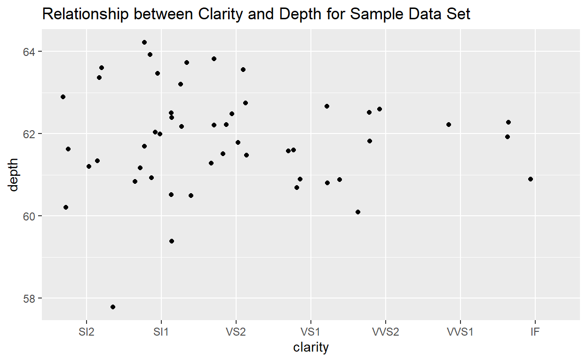
The second example shows that jittering makes the polynomial relationship between depth and clarity more visible.

Exercise
Please click here to download your exercise.

More and More
How diamonds prices distribute over cut type?
Violin Plot: Violin plots are similar to box plots, except that they also show the kernel probability density of the data at different values.
ggplot(diamonds,aes(x=cut,y=price))+geom_violin()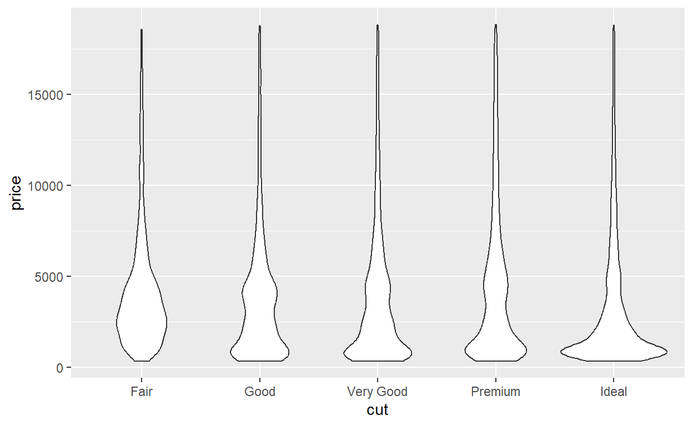
ggplot(diamonds,aes(x=cut,y=price,fill=cut))+geom_violin()+geom_boxplot(width=0.15)+labs(title="Distribution of Price by Cut")
#width sets the size of box plot
It is seen that price has right skewed distribution except good cut. Also, the price of ideal cut diamond is smaller than others on the average.
Extra
statsExpressions package
This package helps you to print the output of the statistical test on the related plots. It can be applicable for many types of plot.
For other examples, please click here.
library(ggplot2)
library(ggforce)
library(statsExpressions)
# plot with subtitle
ggplot(diamonds,aes(x=cut,y=price)) +
geom_violin() +geom_boxplot(width=0.15)+
labs(
title = "Fisher's one-way ANOVA",
subtitle = oneway_anova(diamonds, cut, price, var.equal = TRUE)$expression[[1]]
)## Warning: package 'ggforce' was built under R version 4.1.3## Warning: package 'statsExpressions' was built under R version 4.1.3
Consider first research question and answer this with different visual
What is the frequency distribution of CUT?
Lollipop Chart: Lollipop plot is basically a barplot, where the bar is transformed in a line and a dot. It shows the relationship between a numeric and a categorical variable. A lollipop is built using geom_point() for the circle, and geom_segment() for the stem.
t = table(diamonds$cut)
df = data.frame(t)
dfggplot(df,aes(x=Var1,y=Freq)) +geom_point() + geom_segment(aes(x=Var1, xend=Var1, y=0, yend=Freq))
ggplot(df,aes(x=Var1,y=Freq)) +geom_point(size=5, color="darkred", fill="yellow", alpha=0.7, shape=21, stroke=2) +geom_segment(aes(x=Var1, xend=Var1, y=0, yend=Freq))+labs(title="Lollipop Plot of Cut",x="Cut Types",y="Frequency")
What is the change in the prices within each cut type?
Dumbell Plot: Dumbell plot, a.k.a Dumbell Chart, is great for displaying changes between two points in time, two conditions or differences between two groups.
Before drawing this plot, your data set should be ready for it.
Data Manipulation
min_price = aggregate(depth~cut,data=diamonds,min)
max_price = aggregate(depth~cut,data=diamonds,max)
dumbell_data=cbind(min_price,max_price)
dumbell_dataNot enough..
dumbell_data = dumbell_data[,-3]
colnames(dumbell_data) = c("cut","min","max")
dumbell_datalibrary(ggalt)
ggplot(dumbell_data, aes(y=cut, x=min, xend=max)) +
geom_dumbbell(size=3, color="gray80",
colour_x = "gold1", colour_xend = "darkred",
dot_guide=TRUE, dot_guide_size=0.1)## Warning: package 'ggalt' was built under R version 4.1.2## Registered S3 methods overwritten by 'ggalt':
## method from
## grid.draw.absoluteGrob ggplot2
## grobHeight.absoluteGrob ggplot2
## grobWidth.absoluteGrob ggplot2
## grobX.absoluteGrob ggplot2
## grobY.absoluteGrob ggplot2## Warning: Using the `size` aesthetic with geom_segment was deprecated in ggplot2 3.4.0.
## i Please use the `linewidth` aesthetic instead.
It is seen that depth of fair diamonds have the highest variability. The premium diamonds have more consistent depth value.
Appearance
ggplot2 package provides several functions that improves
the appearance of the plot, and thus we have a visual that has the ideal
graph properties.
The appearance of ggplot objects can be improved using themes in
ggplot2 package and other theme packages such as ggtheme
and bbplot.
We will consider two scenarios. In the first one, our purpose is just to illustrate the frequency of each diamond cut type. On the other hand, we will emphasize the number of very good cut diamonds in the second one. Scenario 1
ggplot(df,aes(x=Var1,y=Freq,fill=Var1))+geom_bar(stat="identity",width=0.5)+
labs(title="Bar Plot of Cut",y="Freq",x="Level")+scale_fill_manual(values=c("darkred","gold1","maroon","steelblue","darkblue"))+geom_text(aes(label=Freq),vjust=-0.25,fontface="bold")+theme_bw()
library(bbplot)
ggplot(df,aes(x=Var1,y=Freq,fill=Var1))+geom_bar(stat="identity",width=0.5)+
labs(title="Bar Plot of Cut",y="Freq",x="Level")+scale_fill_manual(values=c("darkred","gold1","maroon","steelblue","darkblue"))+geom_text(aes(label=Freq),vjust=-0.25,fontface="bold")+bbc_style()
You can also use theme() function for customization.
library(bbplot)
ggplot(df,aes(x=Var1,y=Freq,fill=Var1))+geom_bar(stat="identity",width=0.5)+ylim(0,25000)+
labs(title="Bar Plot of Cut",y="Freq",x="Level")+scale_fill_manual(values=c("darkred","gold1","maroon","steelblue","darkblue"))+geom_text(aes(label=Freq),vjust=-0.25,fontface="bold")+bbc_style()+
theme(plot.title = element_text(size=18),axis.text = element_text(size=12,face="bold"),legend.text = element_text(size=10))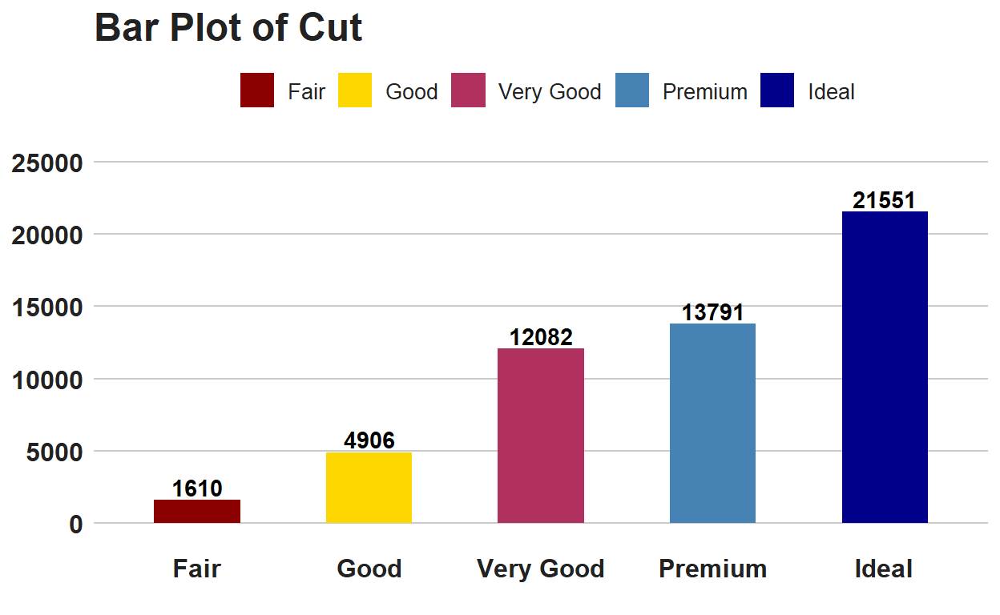
In an ideal bar plot, the bar starts with the highest one.
library(bbplot)
ggplot(df,aes(x=reorder(Var1,-Freq),y=Freq,fill=Var1))+geom_bar(stat="identity",width=0.5)+ylim(0,25000)+
labs(title="Bar Plot of Cut",y="Freq",x="Level")+scale_fill_manual(values=c("darkred","gold1","maroon","steelblue","darkblue"))+geom_text(aes(label=Freq),vjust=-0.25,fontface="bold")+bbc_style()+
theme(plot.title = element_text(size=18),axis.text = element_text(size=12,face="bold"),legend.text = element_text(size=10))
When you use labels on the top of the bar, you do not need to use y axis.
library(bbplot)
ggplot(df,aes(x=reorder(Var1,-Freq),y=Freq,fill=Var1))+geom_bar(stat="identity",width=0.5)+ylim(0,25000)+
labs(title="Bar Plot of Cut",y="Freq",x="Level")+scale_fill_manual(values=c("darkred","gold1","maroon","steelblue","darkblue"))+geom_text(aes(label=Freq),vjust=-0.25,fontface="bold")+bbc_style()+
theme(plot.title = element_text(size=18),axis.text = element_text(size=12,face="bold"),legend.text = element_text(size=10),axis.text.y = element_blank())
Then, put the legend on the top left of the plot.
library(bbplot)
ggplot(df,aes(x=reorder(Var1,-Freq),y=Freq,fill=Var1))+geom_bar(stat="identity",width=0.5)+ylim(0,25000)+
labs(title="The Bar Plot of Cut",y="Freq",x="Level",subtitle ="diamonds data set is used.")+scale_fill_manual(values=c("darkred","gold1","maroon","steelblue","darkblue"))+geom_text(aes(label=Freq),vjust=-0.25,fontface="bold")+bbc_style()+
theme(plot.title = element_text(size=18),plot.subtitle = element_text(size=10),axis.text = element_text(size=12,face="bold"),legend.text = element_text(size=9),axis.text.y = element_blank(),legend.position='top',
legend.justification='left',
legend.direction='horizontal')
If our purpose is to emphasize the very good diamond cuts, we will use Gestalt Principle.

library(bbplot)
ggplot(df,aes(x=Var1,y=Freq,fill=Var1))+geom_bar(stat="identity",width=0.5)+ylim(0,25000)+
labs(title="Bar Plot of Cut",y="Freq",x="Level")+scale_fill_manual(values=c("darkgrey","darkgrey","darkred","darkgrey","darkgrey"))+geom_text(aes(label=Freq),hjust=-0.25,fontface="bold")+bbc_style()+coord_flip()+
theme(plot.title = element_text(size=18),axis.text = element_text(size=12,face="bold"),legend.text = element_text(size=10),axis.text.x = element_blank(),legend.position='none')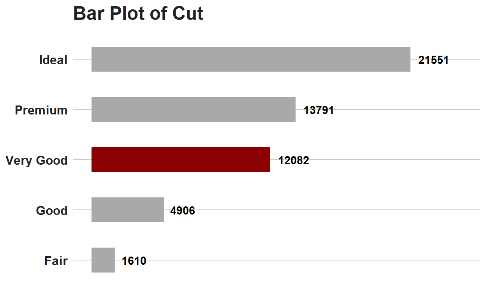
You can see more details from my lecture note for data visualization.
Exercise 2
Please draw a bar plot that emphasize the Canadian prime minister who has the longest time period in the office and shortest time period in the office by using the table below.
| Value | Count |
| Jean Chretien | 120 |
| Stephen Harper | 116 |
| Brian Mulroney | 104 |
| Pierre Trudeau | 91 |
| Justin Trudeau | 62 |
| Paul Martin | 25 |
| Transfer | 9 |
| Joe Clark | 8 |
| Kim Campbell | 4 |
| John Turner | 2 |
Drawing a Map in R
Mapping with Leaflet
Leaflet is one of the most popular open-source JavaScript libraries for interactive maps. It provides features like Interactive panning/zooming, Map tiles, Markers, Polygons, Lines, Popups, GeoJSON, creating maps right from the R console or RStudio. It also allows you to render spatial objects from the sp or sf packages, or data frames with latitude/longitude columns using map bounds and mouse events to drive Shiny logic, and display maps in non-spherical Mercator projections.(Leaflet Introduction)
Please install leaflet package to use all function including by it.
install.packages("leaflet")
library(leaflet)Basic Usage
You create a Leaflet map with these basic steps:
- Create a map widget by calling it leaflet().
- Add layers to the map by using layer functions (e.g. addTiles, addMarkers, addPolygons) to modify the map widget.
- Print the map widget to display it. Here is a basic example:
library(leaflet)
leaflet()## Warning: package 'leaflet' was built under R version 4.1.3leaflet()%>%addTiles() # Add default OpenStreetMap map tilesleaflet()%>%addTiles() %>%addMarkers(lng=174.768, lat=-36.852, popup="The birthplace of R")leaflet()%>%setView(lng=174.768, lat=-36.852, zoom=20)%>%addTiles()
#setwiew sets the center of the map view and the zoom level.Adding Circle to your map
Let’s consider the data taken from Istanbul Municipality Open Data portal. The data shows location of the fire station in the city.
head(itfaiye_bilgi)# add some circles to a map
leaflet(itfaiye_bilgi) %>% addCircles()## Assuming "long" and "lat" are longitude and latitude, respectivelyThis map is not meaningful without providing tiles.
leaflet(itfaiye_bilgi)%>%addTiles()%>%addCircles(lng = ~itfaiye_bilgi$long, lat = ~itfaiye_bilgi$lat)You can change your tiles provider.
leaflet(itfaiye_bilgi)%>%addProviderTiles("Esri")%>%addCircles(lng = ~itfaiye_bilgi$long, lat = ~itfaiye_bilgi$lat)Exercise 3
Please download and install izmir package from R.
install.packages("izmir")
Then, run the following command.
library(izmir)
car_park<-get_data_from_izmir("otopark-doluluk-ve-lokasyon-bilgileri")
head(car_park)Please draw a map that shows the location of car park points in İzmir using leaflet.
You can look at my tutorials if you are interested in drawing a map with ggplot2 and leaflet in R.